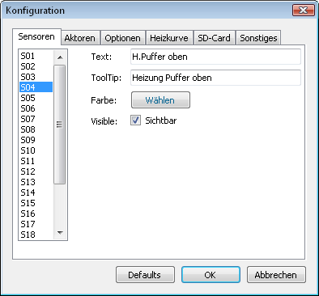
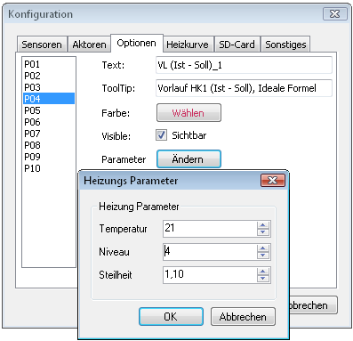
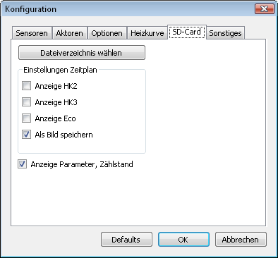
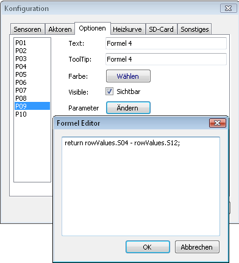

Voraussetzung für die Installation des Programms auf einem
Windows-System ist das .NET Framework 4.0. Falls es noch nicht auf
dem Rechner installiert ist, kann das .NET Framework 4.0 von der
Microsoft-Seite kostenfrei heruntergeladen
werden.
http://www.microsoft.com/netframework/
Das
.NET Framework ist zuerst zu installieren. Danach erfolgt die
Installation des Programms mit der Datei SolvisSC2.msi (Doppelklick
im Explorer). Das Programm ist jetzt im Programmverzeichnis
Solvis\SolvisSC2 installiert. Über das Startmenu Programme\SolvisSC2
kann das Programm aufgerufen werden.
Über den Menupunkt „Extras->Konfiguration“ kann das Programm für den Benutzer eingestellt werden. Für die Logdaten-Anzeige können die Texte, Tooltip, Farbe und Sichtbarkeit der Sensoren, Aktoren und Optionen angepasst werden. Hierzu wählt man zuerst den passenden Tabulator an (Sensoren, Aktoren, Optionen). Auf der linken Seite muß dann der zu ändernde Sensor, Aktor oder Option angewählt werden. Dann können für dieses angewählte Element die Werte verändert werden. Allerdings ist es bei den Optionen nicht empfehlenswert die Texte zu verändern, da bei den Optionen eine im Programm festgelegte Funktion dahintersteht (Ausnahme: Freie Formeln). Bei einigen Optionen können die relevanten Parameter eingestellt werden. Diese Parameter werden in dem zusätzlichen Dialogfenster nach dem Betätigen von „OK“ direkt übernommen
Beispiel für Sensor S04:

Beispiel für Option P04:

Unter dem Tabulator „Heizkurve“ können die Grundwerte für das Fenster eingestellt werden, welches über Extras->Heizkurve aufgerufen wird.
Unter dem Tabulator „SD-Card“ können die Grundwerte für das Zeitplan Fenster eingestellt werden, welches über Extras->SD-Card Infos->Zeitplan aufgerufen wird. Das Dateiverzeichnis muß auf ein Verzeichnis gesetzt werden, in dem sich die Dateien zeitplan.txt, zaehlst.txt und paramact.txt befinden.

Mit dem „Defaults“-Schalter werden die im Programm
festgelegten Grundwerte aktiviert.
Die meisten Änderungen der
Konfiguration sind sofort wirksam. Nach Änderung einiger spezieller
Konfigurationseinstellungen (z.B. Freie Formeln) ist es allerdings
notwendig das Programm neu zu starten.
Nach dem Beenden des
Programms wird eine Konfigurationsdatei (User.config) angelegt. Der
Pfad für die User.config ist unterschiedlich bei verschiedenen
Betriebssystemen.
Unter Windows XP lautet der Pfad „Dokumente
und Einstellungen\<UserName>\Anwendungsdaten\Solvis\SolvisViewer“.
Unter Windows Vista lautet der Pfad
„Benutzer\<UserName>\AppData\Roaming\Solvis\SolvisViewer“.
Die
User.config ist eine Xml-Datei. Alternativ kann auch diese Datei mit
einem Xml-Editor oder einem normalen (UTF8 fähigen) Texteditor
bearbeitet werden.Über die Xml-Datei können Text, ToolTip,
Aktivierzustand (Checked), Sichtbarkeit (Visible), Farbe (ColorRGB)
der Sensoren S01 bis S24, der Aktoren A01 bis A20 und den Optionen
P01 bis P08 angepasst werden.
Checked und Visible können auf die
Werte „true“ oder „false“ gesetzt werden. Bei ColorRGB wird
ein RGB-Wert (Rot, Grün, Blau-Anteil) eingestellt. Jeder der drei
durch Komma getrennten Werte kann im Bereich 0 bis 255 liegen. Der
Wert 0,0,0 entspricht Schwarz, 255,255,255 entspricht Weiß.
Im Xml-Tag „OpenDir“ ist der Pfad für das Öffnen der
Solvis-Datei hinterlegt.
Im Xml-Tag „Version“ ist die aktuelle
Programmversion hinterlegt.
In BurnerMinPower (Brenner minimale
Leistung) und BurnerMaxPower (Brenner maximale Leistung) können die
Werte für den Brenner eingestellt werden.
In Latitude und Longitude können die eigenen geografischen Koordinaten eingestellt werden für die Darstellung des Sonnenstands.
In Temperature, Niveau und Gradient werden die Startwerte für die
Heizkurve eingestellt.
Temperature darf nur ganzzahlig im Bereich
12 bis 28,
Niveau darf nur ganzzahlig im Bereich -5 bis
+5,
Gradient darf nur in 0.05 Schritten im Bereich 0.50 bis
2.00
vorgegeben werden.
In TemperatureVL, NiveauVL und GradientVL werden die Werte der Heizungs-Anlage eingestellt. Diese Werte dienen der Bestimmung der Abweichung der Vorlauftemperatur des ersten Heizkreises.
Achtung: Die Werte mit
Nachkommastellen müssen in der User.config Datei mit einem Punkt
eingegeben werden (z.B. 7.5).
Bei Falscheingabe wird eine Datei
StackTrace.txt im oben genannten Verzeichnis erzeugt.
Beim jedem neuen Programmstart werden die aktuellen Werte aus der User.config Datei verwendet.
Xml-Editor: z.B. Xml Notepad 2007 von Microsoft
http://www.microsoft.com/download/en/details.aspx?id=7973
Durch Anwählen des Menupunkts Extras/Heizkurve wird ein neues Fenster geöffnet für die Darstellung von drei parametrierbaren Heizkurven. Hierbei zeigen die ersten beiden Kurven (Curve1 und Curve2) den echten von Solvis realisierten Verlauf der Heizkurve. Der Verlauf ist geprägt durch eine Rundung auf ganze Grad für die Vorlauf-Temperatur. Man sieht aber auch deutlich den Versatz bei negativen Außentemperaturen. Die dritte Kurve zeigt einen idealisierten Verlauf der Kurve (Ideal), wie sie in der Solvis Beschreibung L30 dargestellt ist. Für alle Kurven kann die Raum-Solltemperatur (Temperature) (Display Heizkreismenu, Seite 3), Steilheit (Gradient) (Heizkreismenu, Seite 2) und Niveau (Thermometersymbol im Heizungsmenu) vorgegeben werden.
Anmerkung des Verfassers: <Den Parameter „Niveau“
hätte ich auch im Heizkreismenu erwartet. Das Thermometersymbol wäre
nur zur (additiven) Feinregulierung des „Niveaus“ notwendig.
Aber
es gibt zumindest eine getrennte Einstellung des „Niveaus“ für
jeden Heizkreis über das Thermometersymbol im Heizungsmenu.>
Durch Variation der im unteren Teil des Fensters verfügbaren Parameter wird der Einfluss in der Heizkurve grafisch sichtbar gemacht. Somit kann man relativ leicht beurteilen, wie sich die Änderungen von Parametern auswirken. Über den Menupunkt „Drucken“ kann eine Druckvorschau (PrintPreview) oder ein Druck (Print) ausgelöst werden.
Mit dem Menupunkt „Konfiguration“ können die
Berechnungsverfahren der Kurven verändert werden. Der obere Teil in
dem aufgeklappten Menu ist für die Kurve1 (Curve1), während der
untere Teil für die Kurve2 zuständig ist. Ohne Anwahl einer der
Menupunkte wird der Originalverlauf der Solvis Control 2
dargestellt.
Mit dem Aktivieren von „floor“, „round“ oder
„nicht gerundet“ für Curve1 bzw. Curve2 wird die bei Solvis
verwendete Formel mit unterschiedlichen Rundungsverfahren
dargestellt. Der Verfasser ist der Meinung, dass die alternativen
Berechnungs-Modelle besser geeignet wären für die Bestimmung der
Heizkurve und der Idealkurve am nächsten kämen, wenn man die
Mischersteuerung mit ganzen Grad-Zahlen durchführen muss. Nach
eigenen Beobachtungen kämen die „round“ oder „nicht gerundet“
Formel der Realität am nächsten. Zusätzlich müsste nach Ansicht
des Verfassers aber auch eine Betrachtung über VL Ist und VL Soll
über einen angemessenen Zeitraum in der „Solvis Control 2“
stattfinden. Die aufgetretenen Abweichungen in dem zugrunde liegenden
Zeitraum könnte die „Solvis Control 2“ durch zusätzlichen
Eingriff in die Mischersteuerung korrigieren.
Die zugrunde liegende Basis-Formel lautet:
VL = k1 * G * (RT –
AT)**k2 + RT + N
Hierbei sind
VL = Vorlauftemperatur
k1, k2
= Konstanten
G = Gradient oder Steilheit
RT = Raumtemperatur
AT
= Aussentemperatur
N = Niveau
k1 wurde mit dem Wert 1.8207 und
k2 mit 0.8 angenommen. Die tatsächlichen Werte, die Solvis verwendet
hat, können geringfügig abweichen.
Floor-Formel: VL = (int)(k1 * G * pow(RT – floor(AT), k2) + RT + N);
Round-Formel: VL = round(k1 * G * pow(RT – round(AT * 2) / 2,
k2) + RT + N);
Hinweis: Die Round-Formel rundet auf halbe Grad für
die Aussentemperatur.
nicht gerundet-Formel: VL = round(k1 * G * pow(RT – AT, k2) + RT + N);
wahrscheinliche Solvis-Formel: VL = (int)(k1 * G * pow(RT –
(int)(AT), k2) + RT + N);
Da round keine Standardfunktion in
der C-Bibliothek ist, muss sie folgendermassen definiert werden:
int
round(double value) {
if (value >= 0.0)
return (int)(value +
0.5);
else
return (int)(value - 0.5);
}
Im Internet findet man diverse Vorgehensweisen für die Bestimmung von optimalen Heizkurven. z.B.
http://www.shk-mayer.de/Page/Waermeerzeuger/Heizkurve.html
http://www.moria.de/~michael/haus/energie/heizkurve.html
Um die optimale Heizkurve für den niedrigsten Energieverbrauch einstellen zu können, ist eine komplette Heizperiode erforderlich. Erforderlich für die Bestimmung der Heizkurve sind unterschiedliche Aussentemperaturen. Zu beachten ist auch die Empfehlung von Solvis für die Montage des Aussentemperatur-Fühlers.
Bei der Solvis-Control 2 hat man für die Einstellung der Heizkurve drei Parameter zur Verfügung.
Raum-Soll-Temperatur (Heizkreismenu, Seite 3)
Niveau: Im Menu Heizung ist dies der Schaltwippen-Wert des Thermometersymbols.
Steilheit der Heizkurve: (Heizkreismenu, Seite 2)
Bei der Einstellung der Parameter
für die Vorlauftemperatur sollte man folgendermassen vorgehen (ohne
Raumfühler):
Heizkörperventile voll aufdrehen (Heizkörper sollten hydraulisch abgeglichen sein).
gewünschte Temperatur (z.B. 21 Grad) im Heizkreismenu, Seite 3 als Raum-Solltemperatur einstellen.
Einen Grundwert für die Steilheit einstellen (z.B. 1,2 ) im Heizkreismenu, Seite 2. Es sollte die Empfehlung aus der Solvis-Beschreibung bzw. des Heizungsbetriebs berücksichtigt werden für die Festlegung des Grundwertes.
Dann den Niveau Parameter so eingestellen, das sich eine Temperatur von ungefähr 21 Grad in den Räumen ergibt. Ein bis zwei Tage Wartezeit sind erforderlich nach jeder Änderung.
Bei einigermassen gleichmässigen Aussentemperaturen ist die zugehörige Soll Vorlauf-Temperatur tabellarisch zu notieren. Der Aussentemperatur Mittelwert und die Soll Vorlauf-Temperatur können im Heizkreismenu, Seite 4 und 5 für die Tabelle abgelesen werden. Unter Umständen sind jetzt Niveau bzw. Steilheit in kleinen Schritten anzupassen, so dass die Temperatur in den Räumen stimmt.
Wenn man das gesamte
Aussentemperatur-Band von +20 bis -20 Grad (wenn möglich) mal mit
den zugehörigen Vorlauftemperatur (VL-Temp.)
protokolliert hat, dann kann die optimale Einstellung fixiert werden.
Tip:Im Prinzip reicht es aber aus, wenn man eine VL-Temp. bei Aussentemp. von ca. +15 Grad und eine weitere VL-Temp. bei einer der niedrigsten Aussentemperaturen bestimmt. Damit kann man dann mit dem Programm (Menupunkt Extras->Heizkurve) die passenden Heizkurven Parameter bestimmen.
Achtung: Bei niedrigen Aussentemperaturen ist die aktuelle Vorlauf-Temperatur (VL Ist) ungefähr eine Stunde nach der Umschaltung vom Absenk- zum Tag-Betrieb zu prüfen. Die „VL Ist“ sollte sich in der Nähe der Soll Vorlauf-Temp. befinden. Falls das nicht der Fall ist und auch der Mischer nicht mehr mit „Mischer auf“ Kommandos angesteuert wird (Mischer ist am Anschlag ! ), dann ist im Installateur-Bereich für den Heizkreis der Offset-Parameter zu vergrössern.
Für einen optimalen Verbrauch sind gegebenfalls weitere Parameter im Installateur-Bereich anzupassen.
z.B. Gebläsedrehzahl Stufe 2 bei einer Gasheizung oder auch die Anforderungstemperaturen für Warmwasser.
Der Verfasser hat
einen SolvisMax Gas Pur (5 – 20kW) ohne Solar, ein Heizkreis.
Es
wurden im Installateur-Bereich folgende Parameter angepasst:
Heizkreis Offset: 5 Grad
Heizung Gebläsedrehzahl Max: 18kW
Wassernachheizung: 60%
Wasser Anf. Start: 7
Wasser Anf. Stop: 10
Warmwasservorrang: Aus
Für die Sommermonate hat es sich bewährt, die Heizung in den „Standby Betrieb“ zu schalten. Für die Wintermonate wurde der „Zeit / Automatik Betrieb“ gewählt.
Hinweis: Wenn die Heizung im „Standby Betrieb“ während der Sommermonate arbeitet, werden nur die Heizkreise inklusive der Heizungspumpe abgeschaltet. Die Warmwasser Erzeugung arbeitet normal weiter. Somit kann man in dieser Zeitphase alle Heizkörperventile voll aufdrehen, damit sich die Federn in den Heizkörper-Ventilen entspannen können.
Im Hauptfenster des Programms SolvisSC2Viewer können die Logdateien, die auf der Speicherkarte der „Solvis Control 2“ abgelegt sind, sichtbar gemacht werden und auch ausgedruckt werden.
Nach der Auswahl einer Solvis-Datei über das Datei-Menu (bzw. Öffnen-Icon in der Toolbar) wird durch Aktivieren von einem oder mehreren Auswahl-Elementen auf der linken Seite des Hauptfensters der Kurvenverlauf dieser Elemente (Sensoren, Aktoren oder Optionen) in dem Chart auf der rechten Seite dargestellt. Die Y-Achse zeigt für die Sensoren im Regelfall die Temperatur an, während die X-Achse generell die Zeitachse ist. Bei den Aktoren ist die Y-Achse im Regelfall ein Prozentwert.
Durch Auswählen eines Zeitbereichs mit der Maus im Chart wird der
Bereich feiner aufgelöst dargestellt (Ziehen mit gedrückter linker
Maustaste im Chart). Der auswählbare Zeitbereich liegt immer
innerhalb von ganzen Stunden. Mit dem unten sichtbaren Scrollbalken
kann man durch den gesamten Zeitbereich scrollen. Zur Rückschaltung
in den weniger aufgelösten Chart ist der Knopf auf der linken Seite
des Scrollbalken mit der linken Maustaste zu drücken.
Alternativ
zu der eben beschriebenen Zoom Funktion kann im Chart auch ein
Fadenkreuz gesetzt werden. Zur Umschaltung dient der ganz rechts
liegende Toolbar Schalter „Umschaltung Fadenkreuz, Zoom-Funktion“.
Mit Hilfe der Fadenkreuz Funktion kann durch Drücken der linken
Maustaste im Raster von einer Minute ein Strich im Chart eingeblendet
werden. In der unteren vertikalen Y-Achse wird ein Strich im Raster
von einer Einheit und in der oberen Y-Achse wird ein Strich im Raster
von 10 Einheiten dargestellt.
Der ausgewählte Zeitbereich der
Solvis-Datei wird in den oben angeordneten Kalender-Elementen
dargestellt. Über die Kalender-Elemente kann der Zeitbereich
verändert werden. Mit den rechts von den Kalender-Elementen
liegenden Buttons kann einfach durch die Kalenderzeiten navigiert
werden, wenn der Zeitbereich vorher verkleinert wurde.
Im Normalfall wird der Kurvenverlauf im Chart für alle Tage beim Öffnen der Datei angezeigt. Alternativ kann auch ein „1 Tages Modus“ vor Öffnen der Datei angewählt werden. Dann wird nur ein Tag angezeigt nach dem Öffnen einer Datei. Mit den im Abschnitt vorher beschriebenen Buttons kann der zu betrachtende Tag einfach angewählt werden.
Beim Datei-Öffnen können auch mehrere Dateien gleichzeitig ausgewählt werden. Dann erscheinen in der Toolbar zwei zusätzliche Schalter, mit denen man innerhalb der ausgewählten Dateien einfach navigieren kann. Der Name der angezeigten Datei wird oben im Hauptfenster angezeigt.

Die Aktoren werden generell im oberen Teil des Chart dargestellt, die Sensoren und Optionen werden im unteren Teil dargestellt.
Für die Optionen gibt es im Regelfall Parameter in der
User.config Datei. Diese Parameter sind bei Bedarf im
Konfigurationsmenu anzupassen.
|
Optionsname |
Parameter |
|---|---|
|
P01, Brenner kW |
BurnerMinPower, BurnerMaxPower |
|
P02, Solar kW |
Formeleditor |
|
P03, Sonnenstand |
Latitude, Longitude |
|
P04, VL (Ist - Soll)_1 |
TemperatureVL, NiveauVL, GradientVL |
|
P05, VL (Ist - Soll)_2 |
- |
Bei den Optionen P04 und P05 wird eine Vorlauf-Temperatur
Differenz für den Heizkreis 1 berechnet und angezeigt (Sensor S12 –
berechneter Vorlauf-Sollwert). Wichtig für eine korrekte Anzeige
sind die Einstellungen der zugehörigen Parameter. Die Werte müssen
denen in der Heizungs-Anlage entsprechen. Die in P04 eingestellten
Parameter werden auch für die Option P05 verwendet.
In der Option
P04 wird der Vorlauf-Sollwert gemäß der stetig verlaufenden
Solvis-Formel berechnet.
In der Option P05 wird der
Vorlauf-Sollwert nach der treppenförmig verlaufenden Formel
berechnet. Bei P05 findet eine Mittelwertbildung über 30 Minuten für
die Aussentemperatur statt. Bei Abweichungen der Differenz von
kleiner als minus 5 Grad wird die Darstellung auf minus 5 Grad
begrenzt.
Solvis speichert jede Minute einen Datensatz von Sensoren und
Aktoren mit Zeitstempel in einer Datei als Textzeile ab.
Im
SolvisSC2Viewer wird beim Öffnen der Datei jeder Datensatz
interpretiert und in seine Bestandteile zerlegt. Für jeden Datensatz
wird im Programm eine Instanz der Klasse RowValues erzeugt.
Der
Zeitstempel wird unter dem Namen DateAndTime im Datenformat DateTime
abgespeichert.
Die Sensoren werden unter dem Namen S01 bis S24 im
Datenformat double (Gleitkomma Format) abgespeichert. Die Werte für
die Sensoren S01 bis S16 und S18 werden jeweils durch 10 dividiert.
Die Sensoren S19 bis S24 werden ohne Umrechnung abgespeichert. Der
Sensor S17 ist ein Sonderfall. Für die Chart-Darstellung wird eine
empirisch gewonnene Formel verwendet. Der dargestellte Wert hat die
Einheit Liter pro Minute. Abgespeichert ist der Sensor S17 allerdings
ohne Umrechnung des Datensatz-Wertes der Logdatei.
Der Mittelwert
des Sensors S10 steht unter dem Namen S10MeanValue.
Die Aktoren
werden unter dem Namen A01 bis A20 im Datenformat double
abgespeichert. Bei den Aktoren findet keine Umrechnung statt.
Die Bedeutung einiger Sensoren, Aktoren sind dem Verfasser nicht bekannt.
Bei der Logdaten Anzeige stehen unter den Optionen P06, P07, P08,
P09 und P10 fünf freie Formelinterpreter für die Chartanzeige zur
Verfügung. Die Formeln sind vom Benutzer zu programmieren in der
Programmiersprache C#. Kenntnisse in einer der Programmiersprachen
C#, C, C++, Java, ... sind von Vorteil, aber keine
Grundvoraussetzung. Mit einfachen bis komplexeren Beispielen wird die
Programmierung erläutert.
Falls die Formel fehlerhaft geschrieben
wurde, erscheint beim Starten des SolvisSC2Viewer eine Meldungsbox,
in der die Programm-Fehler dargestellt werden.
Bei angewähltem Schalter für die Option wird für jeden
Zeitpunkt des ausgewählten Zeitintervalls die Funktion der Formel
durchlaufen. Bei jeder Änderung des Zeitintervalls, also auch beim
Öffnen einer neuen Datei, wiederholt sich der Vorgang. Man spricht
bei den Aufrufen im ausgewählten Zeitintervall auch von einer
Serie.
An die Funktion werden durch den SolvisSC2Viewer zwei
Parameter übergeben, bevor der von der Funktion zurückgegebene Wert
im Chart gezeichnet wird. Der erste Parameter ist die Klasse
RowValues mit dem Bezeichner rowValues. Der zweite Parameter ist ein
Aufzählungstyp (enum) SeriesState mit dem Bezeichner state. Die
Formel muß einen Rückgabeparameter vom Typ double enthalten. Dies
wird erreicht durch eine zum Schluß programmierte Anweisung „return
xx;“, wobei hier xx eine Variable vom Typ double darstellt.
Über
den Bezeichner rowValues kann lesend auf die Elemente der Klasse
zugegriffen werden. Die Elemente der Klasse sind unter der
Überschrift „Solvis Logdaten Format“ genannt. Eine beispielhafte
Programmieranweisung auf ein Element lautet: return rowValues.S17;.
In diesem Fall wird der Wert von S17 für jeden Zeitpunkt im Chart
gezeichnet.
Im Bezeichner state ist eine Information enthalten, ob
es sich um den ersten, letzten oder einem beliebigen anderen Aufruf
einer Serie handelt.
Die möglichen Werte des enum
lauten:
SeriesState.First
SeriesState.Last
SeriesState.Inner
Die freien Formeln sind in eine zur Laufzeit des SolvisSC2Viewer erzeugte Klasse als Funktionen eingebettet. Die Klasse wird nur einmal instanziert. In der Klasse stehen auch ein paar freie Variablen mit unterschiedlichen Datentypen zur Nutzung in den freien Formeln zur Verfügung. Nachfolgend ist die Programmierung der Klasse aufgeführt in der C#-Syntax. Die Funktionen Formula1, Formula2, Formula3, Formula4 und Formula5 werden mit dem Programmcode des Anwenders gefüllt.
Anwender, die komplexe Funktionen in den Formeln programmieren möchten und mit dem Visual Studio arbeiten wollen, können sich bei Bedarf an den Autor wenden.
namespace SolvisSC2Viewer {
using System;
using System.Windows.Forms;
public class Calculator : ICalculator {
private bool hasFormulaSolarVSG;
private bool hasFormulaSolarKW;
private bool bVal1;
private bool bVal2;
private bool bVal3;
private bool bVal4;
private bool bVal5;
private double dVal1;
private double dVal2;
private double dVal3;
private double dVal4;
private double dVal5;
private double dVal6;
private double dVal7;
private double dVal8;
private double dVal9;
private double dVal10;
private int iVal1;
private int iVal2;
private int iVal3;
private int iVal4;
private int iVal5;
/// Default Constructor for class
public Calculator() {
hasFormulaSolarVSG = false;
hasFormulaSolarKW = false;
}
public virtual bool HasFormulaSolarVSG {
get {
return this.hasFormulaSolarVSG;
}
}
public virtual bool HasFormulaSolarKW {
get {
return this.hasFormulaSolarKW;
}
}
/// Calculate an Formula1
public double Formula1(RowValues rowValues, SeriesState state) {
return 0.0;
}
/// Calculate an Formula2
public double Formula2(RowValues rowValues, SeriesState state) {
return 0.0;
}
/// Calculate an Formula3
public double Formula3(RowValues rowValues, SeriesState state) {
return 0.0;
}
/// Calculate an Formula4
public double Formula4(RowValues rowValues, SeriesState state) {
return 0.0;
}
/// Calculate an Formula5
public double Formula5(RowValues rowValues, SeriesState state) {
return 0.0;
}
/// Calculate an FormulaSolarVSG
public double FormulaSolarVSG(RowValues rowValues) {
return 0.0;
}
/// Calculate an FormulaSolarKW
public double FormulaSolarKW(RowValues rowValues) {
return 0.0;
}
}
}
return rowValues.S17;
return rowValues.S04 - rowValues.S12;
return (rowValues.S17 == 0) ? 0.0 : (1.0 / ( rowValues.S17 - 7.6365)) * 80148.4 + 4.53375;
if (state == SeriesState.First) { iVal1 = 0; dVal1 = 0.0; } iVal1++; dVal1 += rowValues.S10; if (state == SeriesState.Last) { MessageBox.Show((dVal1 / iVal1).ToString()); } return 0.0;
Information zu den Beispielen:
Im Beispiel 1 wird der Sensor
S17 im Chart gezeichnet.
Im Beispiel 2 wird die Differenz von „Heizungspuffer oben“ und „Vorlauf Heizkreis 1“ dargestellt.
Im Beispiel 3 wird eine komplexe Formel für den
Solar-Volumenstrom gezeichnet. Zuerst wird der S17 auf 0 geprüft.
Bei Gleichheit wird der Wert zwischen ? und : als return-Wert
zurückgegeben, also 0.0. Ansonsten wird die dahinterstehende Formel
als return-Wert zurückgegeben.
Alternativ kann die Formel auch
folgendermassen geschrieben werden:
if
(rowValues.S17
== 0) return
0.0;
else return
(1.0
/ ( rowValues.S17 - 7.6365)) * 80148.4 + 4.53375;
Beispiel 4 wendet sich an erfahrene Programmierer.
Hier werden
die freien Variablen verwendet. Wie das Beispiel zeigt, sollten am
Beginn einer Serie die verwendeten Variablen initialisiert werden.
Der Sensor S10 wird zum Schluss als Mittelwert des gesamten
Zeitintervalls in einer Messagebox angezeigt.
Es ist weiterhin
möglich Funktionen von Klassen zu verwenden, die in System definiert
sind (z.B. Klasse Math mit den Funktionen Abs, Round, Floor, Ceiling,
usw.).
Weiterführene Dokumentation zu C# z.B. unter:
http://msdn.microsoft.com/de-de/library/system.math.aspx
http://openbook.galileocomputing.de/visual_csharp_2010/
Über Extras->Konfiguration kann in den Optionen (P06 bis P10)
über Parameter und der „Ändern“ Schaltfläche ein einfacher
Formel Editor aufgerufen werden. In diesem Editor kann die „Freie
Formel“ eingegeben werden.
Hinweis: Nach einer Neueingabe
einer Formel ist das Programm neu zu starten.
Programmierfehler in
den freien Formeln werden in einer „Messagebox“ beim
Programmstart angezeigt. Bei Laufzeitfehlern erscheint unten in der
Statusleiste des Programms ein Hinweistext. Es wird dann nur eine
Linie mit 0-Werten gezeichnet. In der Datei StackTrace.txt (im
Verzeichnis der User.config Datei) findet man Fehlerhinweise.

Die standardmässigen Formeln für die Chart-Darstellung lauten (Programmiersprache C#):
Solar VSG (S17): return (1.0 / (rowValues.S17 - 7.6365)) * 80148.4 + 4.53375;
Solar KW (P02): return (rowValues.S05 - rowValues.S06) / (rowValues.S17 / 100.0) * 15.0;
Falls der Wert von S17 den Wert Null aufweist ist das Ergebnis auch Null.
Diese Formeln sind empirisch ermittelt und können in der Realität abweichend sein.
Aus diesem Grund bietet das Programm die Möglichkeit eigene
Berechnungen für Solar VSG (S17) und Solar KW (P02) für die Anzeige
im Chart zu definieren.
Mit dem Konfigurations-Editor können beim
Sensor S17 und bei der Option P02 über den Parameter- Schalter ein
Formeleditor aufgerufen werden. In dem Formeleditor kann dann die
selbstdefinierte Formel eingegeben werden in der Programmiersprache
C# (siehe auch Kapitel „Freie Formeln“).
Vielleicht findet jemand korrekte universelle Formeln und teilt diese dem Forum mit.
Hinweis: Nach Änderung einer Formel ist das Programm neu zu starten.
An die Funktion (Formel) wird durch den SolvisSC2Viewer ein
Parameter übergeben, bevor der von der Funktion zurückgegebene Wert
im Chart gezeichnet wird. Der Parameter ist die Klasse RowValues mit
dem Bezeichner rowValues. Die Formel muß einen Rückgabeparameter
vom Typ double enthalten. Dies wird erreicht durch eine zum Schluß
programmierte Anweisung „return xx;“, wobei hier xx eine Variable
vom Typ double darstellt.
Über den Bezeichner rowValues kann
lesend auf die Elemente der Klasse zugegriffen werden. Die Elemente
der Klasse sind unter der Überschrift „Solvis Logdaten Format“
genannt. Beispielhafte Programmieranweisungen sind bei den
standardmässigen Formeln in diesem Kapitel genannt.
Im Hauptfenster kann unter dem Menupunkt „Extras“ bei geladener Solvis-Datei der Menupunkt „Sensoren prüfen“ betätigt werden. Hierbei wird überprüft, ob die Temperaturfühler S01 (Speicher oben) und S04 (Heizungspuffer oben) korrekt angeschlossen sind. Falls ein Meldungsfenster erscheint mit dem Meldungstext „Temperatur Sensoren S01 und S04 vertauscht“, dann ist der Heizungsbetrieb zu rufen. Dieser muss die Anlage in Ordnung bringen.
Unter dem Menupunkt „Extras“ gibt es den Eintrag „SD-Card
Infos“. In dem Untermenu ist die Anzeige für den Zeitplan
auswählbar. Der Zeitplan beinhaltet tabellarisch die
Zeiteinstellungen der Heizkreise, Zirkulation, Warmwasser und Eco.
Die Information für die Zeiteinstellungen wird aus der Datei
„zeitplan.txt“ entnommen. Optional können für den Zeitplan die
Heizkreise 2 und 3 und Eco Zeiten ausgeblendet werden. Zusätzlich
kann auch das Zeitplan-Fenster als Bild-Datei namens
„TimeOverview.png“ im Dokumentenverzeichnis
(User\Dokumente\Solvis\SolvisViewer) gespeichert werden. Die
Einstellungen dafür werden im Konfigurations-Editor
durchgeführt.
Die Datei „TimeOverview.png“ kann bei Bedarf
mit einem Standardprogramm für die Bildbetrachtung gedruckt werden.
Zum Testen der Anzeige für Zählerstände und Parameter kann im Konfigurations-Editor unter SD-Card die CheckBox „Anzeige Parameter, Zählstand“ angewählt werden. Die Dateien paramact.txt und zaehlst.txt müssen im ausgewähltem Verzeichnis liegen. Die Parameter und Zählerstände können auch gedruckt werden. Bei den Parametern werden die Parameter für Heizkreis 1, Wasser und Zirkulation angezeigt.
Wenn korrekte Informationen zu den Dateien zaehlst.txt und
paramact.txt zur Verfügung stehen, dann wären auch Anzeigen über
Zählerstand und Parameter im SolvisSC2Viewer möglich.
Datei
zaehlst.txt: Es fehlen die Bedeutungen der Werte 4 bis 6.
Datei
paramact.txt: Es fehlen noch viele Parameter Bedeutungen (siehe
Sourcecode Enums.cs, HeatingSettings.cs, CirculationSettings.cs und
WaterSettings.cs im Verzeichnis app\system\solvis.